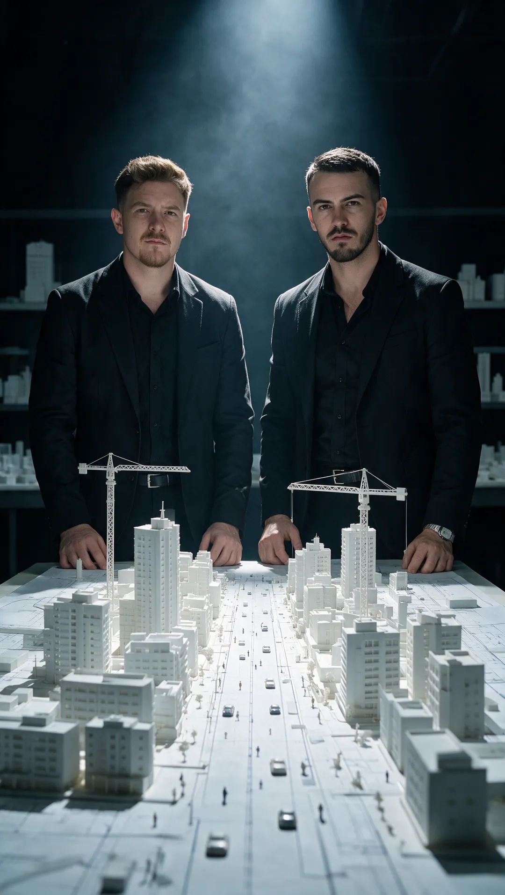
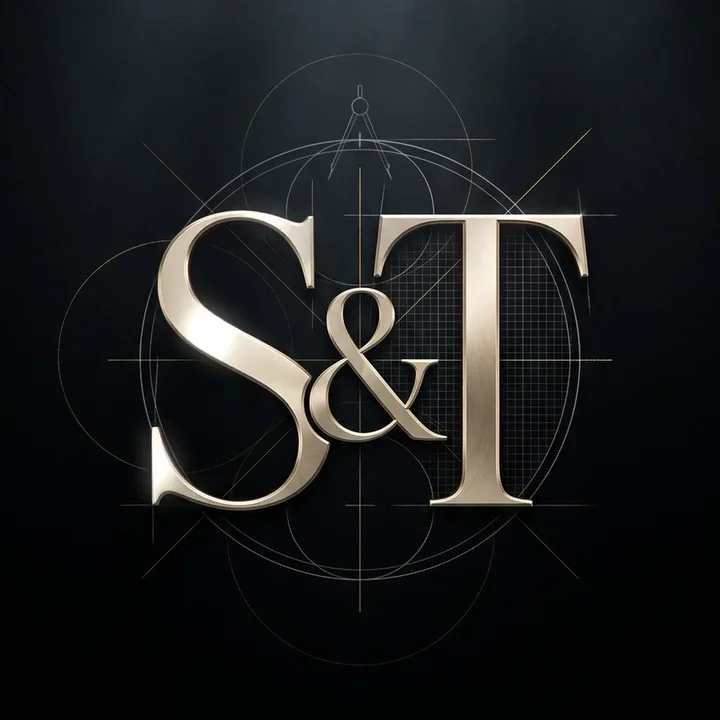

Teaser de lansare
Pentru o lansare, un proiect sau o deschidere. Ca teaserul de mai sus.
S&T Advertising · Hybrid Cinema
Filmare reală, AI și regie. Păstrăm ce e adevărat în clipul tău și construim restul: lumea, lumina și ritmul pe care camera nu le poate prinde.
Cele mai multe reclame nu sunt proaste. Sunt plictisitoare.
Noi luăm ce ai filmat deja și îi dăm regie, lumină și lumi pe care nicio cameră nu le poate filma.
Metoda
Pornim de la ce există: produsul, oamenii, locul, filmările tale. Ce e real rămâne real.
AI-ul construiește ce nu se poate filma: lumi întregi, transformări, mișcări de cameră imposibile.
Regie, montaj pe ritm, culoare și sunet. Finisajul face din clip o reclamă care se ține minte.
Formate
Pentru o lansare, un proiect sau o deschidere. Ca teaserul de mai sus.
Filmăm ce e real, construim cu AI ce nu se poate filma și terminăm totul ca la cinema. Primești 9:16, 1:1 și 16:9.
Ai deja un clip care nu spune destul? Ni-l trimiți. Aceeași poveste, alt nivel.
Fiecare proiect primește o ofertă după un brief de 15 minute.
Regulile noastre
Produsul, spațiul și oamenii nu se deformează. Verificăm fiecare cadru.
Marcăm conținutul generat cum cer platformele și legea.
Pe cineva real îl punem într-o scenă doar dacă a spus da.

Cine suntem
Doi parteneri, două meserii. Unul vine din AI și regie de conținut. Celălalt lucrează în domeniu și știe ce trebuie să vadă un client înainte să aleagă.
Fiecare proiect trece prin mâinile amândurora, de la primul cadru la semnătură.

În curând
Telefonul, emailul și conturile S&T apar aici odată cu lansarea.